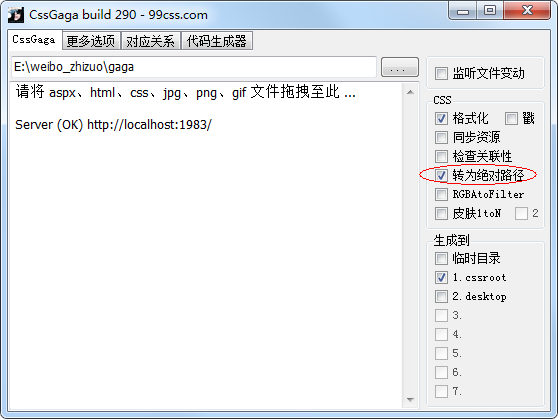
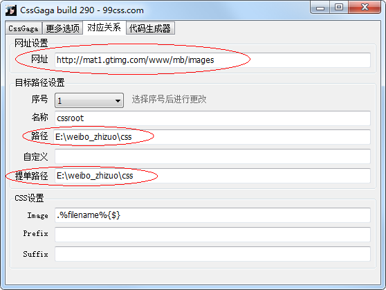
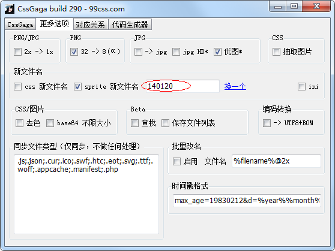

文件组织
* 文件结构图实时维护更新，图片文件名即为版本号
* 微视sprite图片管理依赖CSSgaga工具，下载地址和说明：http://www.99css.com/archives/542
* 规范维护：bennyzhai
#前端资源
资源
| SVN | HTTP | |
|---|---|---|
| HTML目录: | /microblog_web_proj/trunk/docs/制作稿/微视/ | - |
| CSS目录: | /microblog_web_proj/trunk/docs/制作稿/css/weishi/ | - |
| CSSgaga资源目录: | /microblog_web_proj/trunk/docs/制作稿/gaga/weishi/ | - |
| 图片目录: | /microblog_web_proj/trunk/docs/制作稿/images/weishi/ | http://mat1.gtimg.com/www/mb/images/weishi/ |
| 图片目录（临时）: | /microblog_web_proj/trunk/docs/制作稿/images/mv/ | http://mat1.gtimg.com/www/mb/images/mv/ |
| PSD资源目录: | /microblog_web_proj/trunk/docs/制作稿/图片PSD/微视/ | - |
| 如引用jQuery，统一使用: | - | http://mat1.gtimg.com/www/mb/mv/js/jquery.min.js (1.8.3) |
特殊图片
| URL | |
|---|---|
| 0%全透明背景 1*1px gif | http://mat1.gtimg.com/www/mb/images/weishi/spacer.gif |
| 12%黑色背景 10*10px png32 | http://mat1.gtimg.com/www/mb/images/opa_000_12.png |
| 30%黑色背景 10*10px png32 | http://mat1.gtimg.com/www/mb/images/opa_000_30.png |
| 50%黑色背景 10*10px png32 | http://mat1.gtimg.com/www/mb/images/opa_000_50.png |
| 60%黑色背景 10*10px png32 | http://mat1.gtimg.com/www/mb/images/opa_000_60.png |
| 30%白色背景 10*10px png32 | http://mat1.gtimg.com/www/mb/images/opa_fff_30.png |
#文件结构
#CSSgaga配置
| 1. 设置绝对路径 |  |
|---|---|
| 2. 注意网址设置，路径和提单路径均为CSS根目录（不含'weishi'） |  |
| 3. 每次修改base样式中引用的图片时，在CSSgaga中修改版本号 |  |